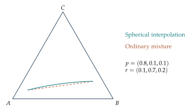

An integral along a discrete path
Let \(G\) be a graph whose vertices are probability states. Orient an edge \(u\to v\), and let \(A(u,v)\) be a value assigned to that directed step, with \(A(v,u)=-A(u,v)\). For a path \(\gamma=(v_0,v_1,\ldots,v_m)\) define its discrete line integral by \[\boxed{\int_\gamma^d A=\sum_{k=0}^{m-1}A(v_k,v_{k+1}).}\] This is a finite sum, so it makes sense before any continuous integration theory.
If a scalar field \(\phi\) is given at the vertices, define its gradient edge value by \[A_\phi(u,v)=\phi(v)-\phi(u).\] For every path from \(u\) to \(v\), \[\int_\gamma^d A_\phi=\phi(v)-\phi(u).\] Intermediate values cancel. This is the discrete fundamental theorem for line integrals. It also tells us that the circulation of a gradient around any closed route is zero.
Circulation detects dependence on the route
A general edge field is not necessarily a gradient. Take a triangle with oriented edges \(A\to B\), \(B\to C\), and \(C\to A\). If each edge has value \(1\) in that direction, the circulation is \(3\). If the field came from vertex values of one function, the three differences would sum to zero. Thus finite circulation detects a local obstruction to finding a scalar potential.
On a connected graph, an antisymmetric edge field is a gradient exactly when its sum around every closed path is zero. It is enough to check a cycle basis. This fact is a useful discrete parallel to conservative vector fields.
Path length is different from a line integral
Now assign each unoriented edge a positive weight \(\ell(u,v)\), such as the Fisher–Rao distance between its endpoint distributions. The length of a path is \[L(\gamma)=\sum_{k=0}^{m-1}\ell(v_k,v_{k+1}).\] Unlike a signed gradient integral, each contribution to length is nonnegative. A shortest path minimizes \(L(\gamma)\) among legal paths with fixed endpoints.
For the unweighted \(N\)-token simplex, moving one token counts as one step. To transform count vector \(a\) into \(b\), the smallest possible number of transfers is \[\boxed{d_{\rm token}(a,b)=\frac12\sum_i|a_i-b_i|.}\] Each transfer corrects one excess token and one deficit token. This supplies both a lower bound and a constructive route attaining it.
Compare graph and spherical geometry
The straight route in probability coordinates need not be a legal sequence of token transfers. And a shortest weighted lattice path need not equal the unrestricted Fisher–Rao geodesic on the sphere. The weighted graph enforces finite, local moves; the sphere allows every intermediate positive probability distribution.
Choose \(N=6\), two lattice states, and two legal token-transfer routes between them. Calculate each route’s unweighted transfer count and its statistical length. Then calculate the spherical distance between their endpoints. Triangle inequality guarantees that neither path is shorter than the exact spherical distance.
This distinction between path-dependent accumulated length and endpoint distance will matter in information-driven motion.
Further investigations: Path sums, circulation, and statistical geodesics
A distance tells us how far apart two distributions are. A path specifies how to move between them. There are several reasonable path constructions: ordinary mixtures, equal steps along a spherical arc, and token transfers on a finite graph. Each answers a different question about allowed intermediate states.
Mixing and spherical interpolation
An ordinary mixture between \(p\) and \(r\) is \[m(t)=(1-t)p+tr,\qquad 0\leq t\leq1.\] Every coordinate is nonnegative and the sum remains one. If we restrict \(t\) to \(0,1/M,\ldots,1\), this is a finite list of distributions with equal coordinate increments.
For equal increments of spherical distance, work with square-root vectors \(s=2\sqrt p\) and \(u=2\sqrt r\). Let \(\alpha=\arccos B(p,r)\). If \(p\ne r\), define \[s(t)=\frac{\sin((1-t)\alpha)}{\sin\alpha}s+ \frac{\sin(t\alpha)}{\sin\alpha}u,\qquad g_i(t)=\frac{s_i(t)^2}{4}.\] For identical endpoints, set \(g(t)=p\). The trigonometric formula is spherical interpolation. Its coefficients are nonnegative on the stated interval, so every coordinate of \(s(t)\) is nonnegative.
To verify that the vector has length two, choose orthogonal unit vectors \(e_1=s/2\) and \(e_2=(u/2-\cos\alpha\,e_1)/\sin\alpha\). Substitution and the sine subtraction identity give \[s(t)=2\bigl(\cos(t\alpha)e_1+\sin(t\alpha)e_2\bigr).\] The squared length is therefore \(4(\cos^2(t\alpha)+\sin^2(t\alpha))=4\). The recovered entries \(g_i(t)\) add to one. This derivation also shows that the angle between \(s(t_1)\) and \(s(t_2)\) is \(|t_2-t_1|\alpha\).
Equal finite steps along a shortest arc
Choose a positive integer \(M\) and form \(g(0),g(1/M),\ldots,g(1)\). Consecutive states have distance \(2\alpha/M\). Their total path length is \(M(2\alpha/M)=2\alpha=d(p,r)\). Such a shortest spherical path is called a geodesic. Here it is represented by a finite list of equally spaced states, each calculated from a closed formula.
The midpoint simplifies to \[g_i(1/2)=\frac{(\sqrt{p_i}+\sqrt{r_i})^2}{2(1+B(p,r))}.\] This follows either from the sine half-angle formula or by normalizing the vector \(\sqrt p+\sqrt r\). The midpoint generally differs from the coordinate average \((p+r)/2\).
Example. Two notions of halfway
Take \(p=(1,0)\) and \(r=(1/4,3/4)\). Their overlap is \(1/2\). The spherical midpoint is \((3/4,1/4)\), whereas their coordinate midpoint is \((5/8,3/8)\). The first divides the spherical distance into two equal parts. The second divides each probability change into two equal parts.
Example. Three labels can trace different routes
Let \(p=(0.8,0.1,0.1)\) and \(r=(0.1,0.7,0.2)\). Their ordinary midpoint is \((0.45,0.4,0.15)\). The square-root midpoint is approximately \((0.4339,0.3935,0.1726)\). In a triangle picture, the mixture follows a straight segment, while the spherical interpolation generally follows a curved route after mapping back to probabilities.

Restricting movement to token transfers
Suppose every intermediate distribution must arise from \(N\) tokens. The allowed states are the lattice vertices \((a/N,b/N,c/N)\). Connect two vertices by an edge if one token can be moved from one category to another. The resulting object is a graph: a collection of vertices with specified connections.
Assign each edge the spherical distance between its endpoints. A graph path is a finite sequence of connected vertices; its length is the sum of its edge weights. Finding the shortest graph path is now a finite optimization problem. It may require a detour because the exact spherical geodesic need not pass through lattice vertices.
The triangle inequality gives a lower bound: \[\text{length of any graph path from }p\text{ to }r\ \geq\ d(p,r).\] Equality is possible when its vertices happen to lie in order on a common shortest arc. Otherwise a positive gap remains. Increasing \(N\) adds more possible states, but comparing different lattices requires care: a denominator-\(N\) vertex need not belong to the denominator-\((N+1)\) lattice. We will measure the gap for chosen lattices without assuming a general convergence theorem.
Example. A boundary path of three token moves
For \(N=3\), move from counts \((3,0,0)\) to \((0,3,0)\) by transferring one token at each step. All intermediate distributions lie on the binary edge. Their angle coordinates increase in order from \(0\) to \(\pi/2\), so their spherical edge lengths add to \(\pi\), equal to the endpoint distance. The three edge lengths are not equal, because equal token transfers do not create equal arc increments.
Dijkstra’s shortest-path algorithm
For graphs with nonnegative edge weights, Dijkstra’s algorithm finds the shortest distance from a starting vertex to every reachable vertex. Give the start tentative distance zero and all other vertices tentative distance infinity. Mark every vertex unvisited.
At each round, select an unvisited vertex with smallest tentative distance. For each neighbor, compare its current tentative distance with the distance to the selected vertex plus the connecting edge weight. Replace the tentative distance if this proposed route is shorter, and record the selected vertex as its predecessor. Then mark the selected vertex visited. Stop when the destination is visited, or when no reachable unvisited vertex remains.
Why can a visited distance be finalized? Any route that first passes through an unvisited vertex has already accumulated at least the smallest remaining tentative distance. Additional nonnegative edges cannot make it smaller. Thus a future route cannot improve the vertex just selected. Following predecessor links backward reconstructs a shortest route.
Example. A small weighted graph
Suppose edges \(AB\), \(AC\), \(CB\), \(BD\), and \(CD\) have weights \(4\), \(1\), \(2\), \(1\), and \(6\). From \(A\), first finalize \(C\) at distance \(1\). This improves \(B\) from \(4\) to \(3\) and gives \(D\) distance \(7\). Finalizing \(B\) then improves \(D\) to \(4\). The shortest route is \(A,C,B,D\) with total weight \(4\).
Choosing a path for an application
A mixture may represent pooling two sources in changing proportions. A spherical path may represent equal statistical changes between tables. A graph path may represent a sequence of feasible changes in an indivisible allocation. Before calculating a shortest path, specify which states and transitions are allowed and what an edge costs. The geometry and the combinatorial constraints together determine the answer.
Counting moves before assigning geometric costs
For two count vectors \(a\) and \(b\) with the same total, define their total surplus \[S=\sum_{i:a_i>b_i}(a_i-b_i)=\frac12\sum_i|a_i-b_i|.\] The surplus equals the total deficit because the counts have the same sum. One token transfer can remove at most one surplus token. Therefore at least \(S\) transfers are required to turn \(a\) into \(b\). This number is attainable: repeatedly move a token from a surplus category to a deficit category until every count agrees.
This proves the minimum number of transfers when every edge costs one. It does not automatically solve the geometrically weighted problem, since different transfers can have different spherical lengths. The cost function determines which optimization problem is being solved.
Example. Minimum number of moves
To transform \((5,1,0)\) into \((1,2,3)\), category A has four surplus tokens. Categories B and C need one and three, respectively. At least four moves are necessary and four suffice, for example \((5,1,0)\) to \((4,2,0)\) to \((3,2,1)\) to \((2,2,2)\) to \((1,2,3)\). Each intermediate vector sums to six. A shortest spherical-weighted route must be found using the actual edge weights.
Midpoints from a normalization calculation
The square-root midpoint can be found without inverse trigonometric functions. Begin with \(v_i=\sqrt{p_i}+\sqrt{r_i}\). Its squared length is \(2+2B\). Normalize \(v\) to unit length and square the entries: \[g_i=\left(\frac{v_i}{\sqrt{2+2B}}\right)^2.\] This is exactly the midpoint formula. The construction treats both endpoints equally and keeps every entry nonnegative. It also shows that if a label is absent at both endpoints, it remains absent at the midpoint and along the whole spherical interpolation.
For a midpoint between two three-label tables, the same arithmetic that computes overlap therefore supplies all its coordinates. The trigonometric formula is needed to choose general equal arc fractions, but halfway has a simpler form.
Measuring a path from a finite list
Given states \(p^{(0)},\ldots,p^{(M)}\), define its polygonal spherical length as \(\sum_{j=0}^{M-1}d(p^{(j)},p^{(j+1)})\). This definition uses a finite sum. Refining a list by inserting a new state cannot lower that sum, because the triangle inequality gives \(d(a,b)\leq d(a,c)+d(c,b)\). If the inserted state lies in order on the same shortest arc, equality holds.
Example. A detour through a pure state
Let \(p=(1,0,0)\) and \(r=(0,1,0)\). The direct distance is \(\pi\). A route through the third pure state has two legs, each of length \(\pi\), for a total of \(2\pi\). A route through \((1/2,1/2,0)\) has two legs of length \(\pi/2\) and is shortest. The intermediate state and the permitted path both matter.
When a graph algorithm reports a route, verify its adjacency and independently sum the reported edge costs. When comparing with a direct geodesic, check that the endpoints are identical in both calculations. These straightforward checks distinguish a feasible route, a measured route length, and a proof that no shorter allowed route exists.
Exercises
- Verify that every ordinary mixture is a probability vector.
- Derive the orthogonal-vector form of spherical interpolation using the sine subtraction identity.
- Show that the midpoint formula’s entries add to one.
- Find the spherical midpoint between \((1,0,0)\) and \((0,1,0)\).
- For the binary endpoints in the first example, find the three interior states that divide the spherical arc into four equal pieces. Expressions using squared sines are acceptable.
- Compute and compare the ordinary and spherical midpoints between \((1/2,1/2,0)\) and \((1/2,0,1/2)\).
- Prove that the sum of the distances along any finite list of states is at least the distance between its endpoints.
- List the neighbors of counts \((1,1,1)\) on the denominator-three token graph.
- Run Dijkstra’s algorithm on the weighted graph in the last example, recording tentative distances after each finalized vertex.
- Why does Dijkstra’s argument require nonnegative edge weights? Give a small graph in which a negative edge would undermine the stated reasoning.
- Construct a graph path along a binary edge for \(N=4\). Verify numerically that the edge lengths telescope to the endpoint spherical distance.
- For one pair of lattice endpoints, compare the shortest token path with the direct spherical distance. Explain why the difference is a useful measure of the constraint imposed by token moves.
Selected exercise solutions
3. The sum of the numerators is \(\sum_i p_i+\sum_i r_i+2\sum_i\sqrt{p_ir_i}=2(1+B)\), exactly the denominator.
4. The midpoint is \((1/2,1/2,0)\).
5. Starting at the first-category probability \(1\), the angle measured from the second axis falls from \(\pi/2\) to \(\pi/6\). The interior first probabilities are \(\sin^2(5\pi/12)\), \(\sin^2(\pi/3)\), and \(\sin^2(\pi/4)\), namely \((2+\sqrt3)/4\), \(3/4\), and \(1/2\).
6. The ordinary midpoint is \((1/2,1/4,1/4)\). Since \(B=1/2\), the spherical midpoint is \((2/3,1/6,1/6)\).
7. Apply the triangle inequality repeatedly, inserting the intermediate states one at a time.
8. The six neighbors are the permutations of \((2,1,0)\).